Geometry-Aware Conditional Neural Network for Surface Pressure Estimation
Haifeng Wang
Washington State University
2026 Natural Hazards Researchers Meeting
“Translating Complexity: Assessment Models and Markets in a Changing Climate”
Wednesday, June 17, 2026 · Boulder, CO
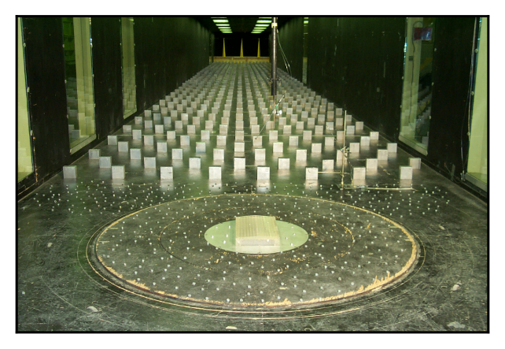
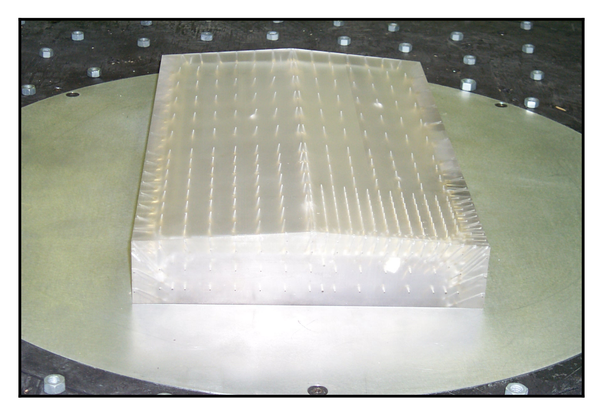
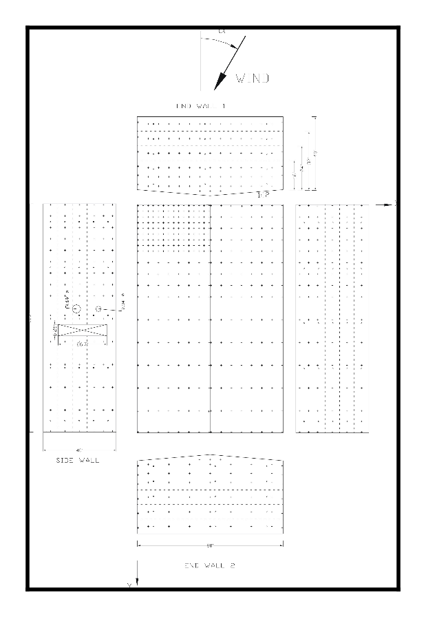
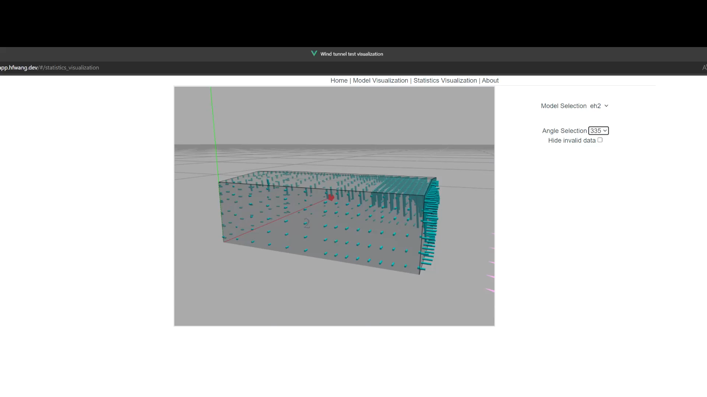
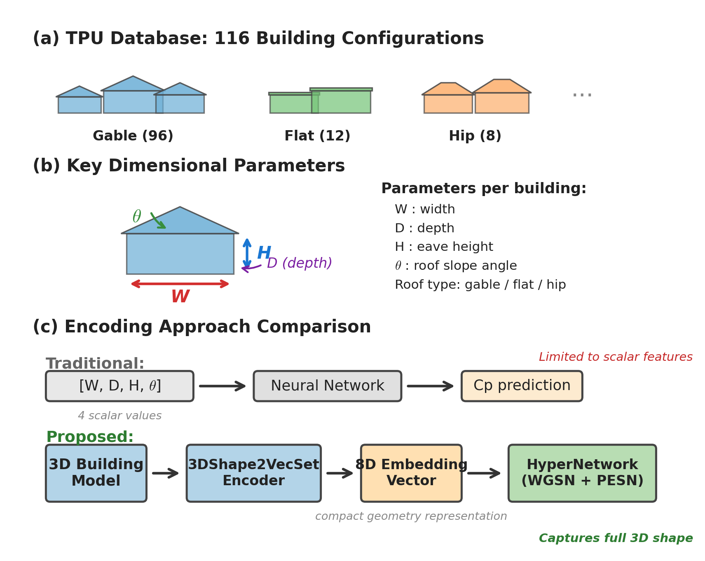
Within a tested building: interpolate pressure over surface coordinates and wind angles.
Across buildings: generalize to new geometries and conditions never tested in a wind tunnel.
A conventional neural network handles one axis — not both simultaneously. Our model does both.
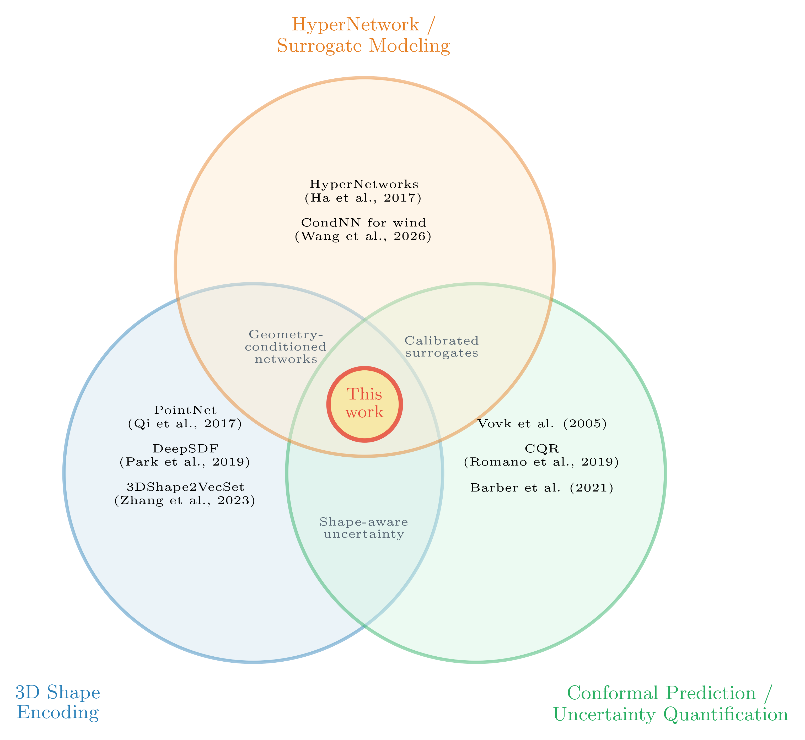
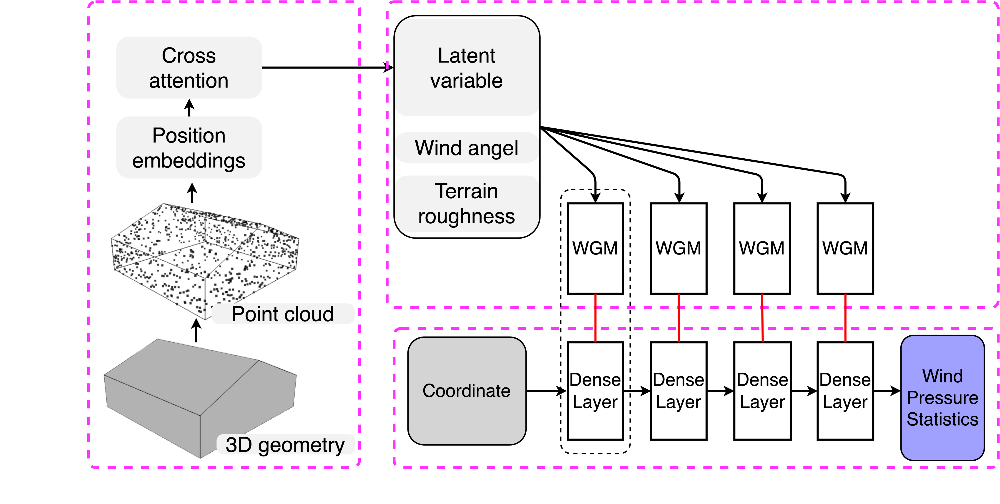
Conditional Neural Network · HyperNetwork Architecture
H, B, D — height, breadth, depth — collapse a 3D form into 3 scalars.
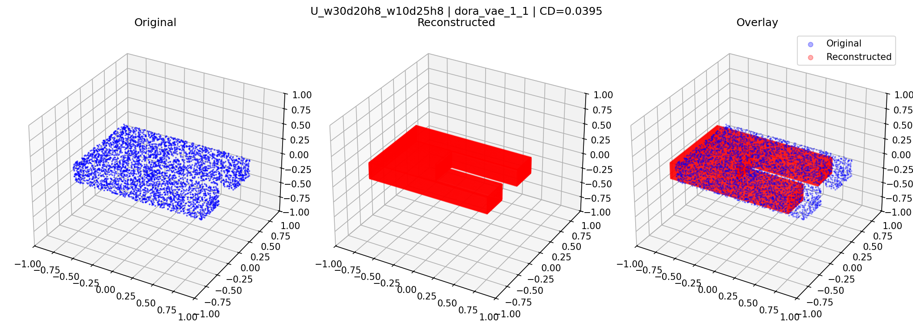
Inter-test generalization · Pressure-field reconstruction
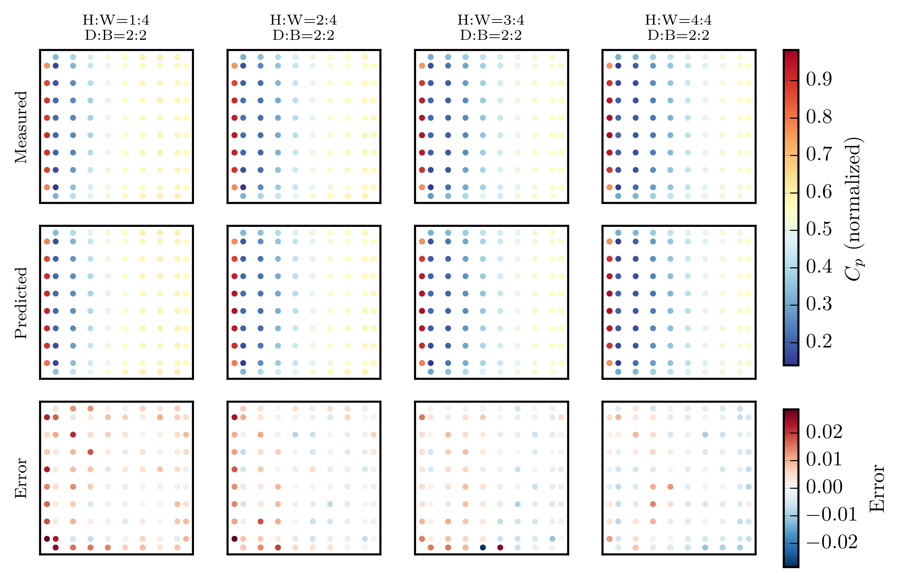
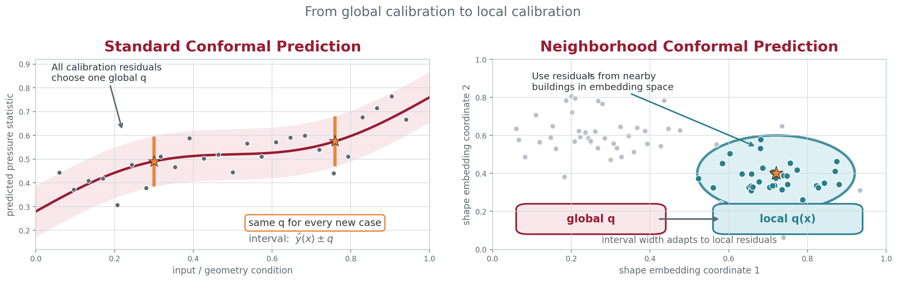
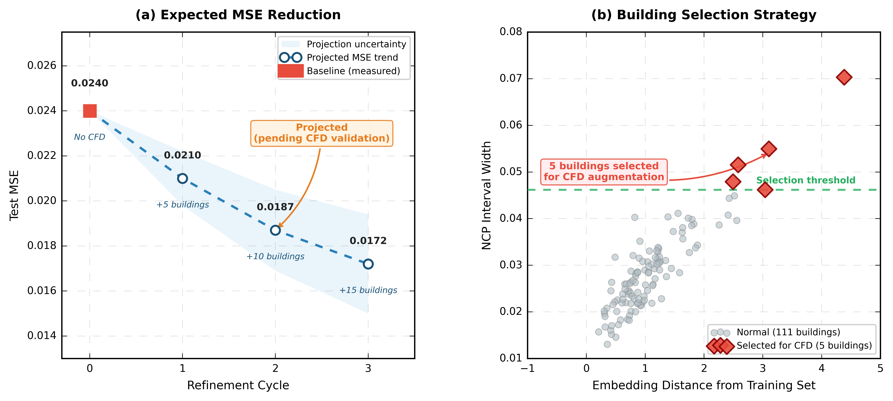
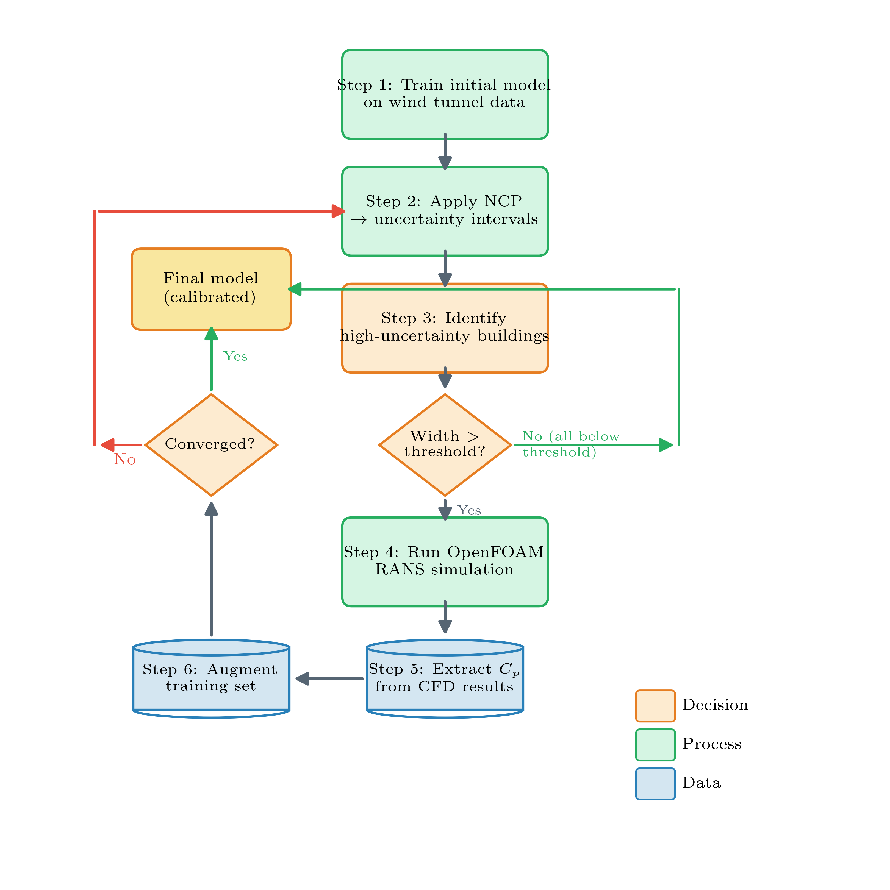